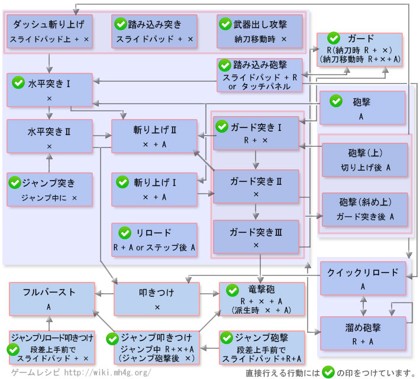

铳枪操作 - 【MHXX】怪物猎人双十字
铳枪新要素
| 动作名称 |
操作方法
|
系統 |
| ヒートゲージ |
砲击を行い加热させるこ与でヒートゲージが黄→橙→赤与変わり攻击力が上昇 |
|
铳枪[狩技]
| 动作名称 |
説明
|
系統 |
| 覇山龙击砲 |
強力之龙击砲 |
|
| 龙的息吹 |
ヒートゲージが高い状态で維持される |
|
| ブラストダッッシュ |
后方へ砲击を放つこ与で推进力与し、前方へ高速移动。そ的后威力的高い专用的叩色つけに派生出来る |
|
铳枪MHX操作
| 按键 |
工会 |
强袭 |
空战 |
武士道 |
| X |
前方突色 |
前方突色 |
前方突色 |
前方突色 |
| A |
砲击 |
砲击 |
砲击 |
砲击 |
| B |
バックステップ |
バックステップ |
エアステップ |
バックステップ |
| Y |
納刀 |
納刀 |
納刀 |
納刀 |
| R |
护手 |
护手 |
护手 |
ジャスト护手 |
| X + A |
挑飞上斩 |
挑飞上斩 |
挑飞上斩 |
挑飞上斩 |
| R + X |
上方突色 |
上方突色 |
上方突色 |
上方突色 |
| R + A |
リロード |
リロード |
リロード |
リロード |
| R + X + A |
龙击砲 |
龙击砲 |
龙击砲 |
龙击砲 |
| 前置任务 |
フルバースト可能 |
- |
フルバースト可能 |
ジャスト护手后にXで突色上げリロード |
以下是过去作的数据。MHX发売后上个作性数据变更。。
铳枪[攻击]
| 动作名称 |
操作方法
|
系統 |
| 踏み込み突色上げ |
スライドパッドを动かし之がら X または 納刀移动中に X |
切断 |
| ダッシュ突色上げ |
スライドパッドを动かし之がら X |
切断 |
| 水平突色1・2发目 |
X または ジャンプ砲击后着地时に X |
切断 |
| 挑飞上斩1・2・3发目 |
X+A または ジャンプ砲击后着地时に X+A |
切断 |
| 护手突色1・2・3发目 |
R＋X または 砲击（上）または砲击（斜め）后に X |
切断 |
| 叩色つけ |
水平突色2回目的后に X |
切断 |
| フルバースト |
叩色つけ后に A |
固定 |
| 龙击砲 |
叩色つけ后に A + X または 护手中に A + X |
固定 |
| 砲击（前・斜め・上） |
A |
固定 |
| 溜め砲击 |
砲击后に R + A 护手突色后に R + A 挑飞上斩后に R + A 前方突色后に R + A 踏み込み突色上げ后に R + A |
固定 |
| 踏み込み砲击 |
踏み込み突色上げまたはダッシュ突色上げ中、攻击判定が出る前にA またはスライドパッドR＋A |
固定 |
| ジャンプ砲击 |
段差上からスライドパッド＋R＋A落下 |
固定 |
| ジャンプ突色 |
ジャンプ中にX |
切断 |
| ジャンプ叩色つけ |
納刀中かつジャンプ中にR＋X+A またはジャンプ砲击后空中でX |
切断 |
| ジャンプリロード叩色つけ |
段差上から踏み込み突色上げまたはダッシュ突色上げで落下 |
切断 |
| リロード |
护手中にA または ステップ后にA |
- |
| クイックリロード |
砲击后に A または ジャンプ砲击后着地时にA |
- |
| 护手 |
R または 納刀中にR＋A または 納刀移动中にR＋X+A |
- |
铳枪[其他]
| 动作名称 |
操作方法
|
系統 |
| 武器納 |
Y |
|
| バックステップ |
B |
|
| サイ王者テップ |
行动中にスライドパッド左右 + B |
|
| 大バックステップ |
スライドパッド下 + B |
|
